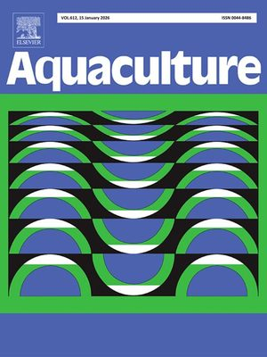

LncRNAs and alternative splicing analysis of full-length transcriptome reveals internal discrepancies between shrimp individuals of Litopenaeus vannamei related to resistance to a microsporidium, Enterocytozoon hepatopenaei
Aquaculture, 2026, 612: 743091
Full-length transcriptome analysis highlighted intrinsic variation in EHP resistance among Pacific white shrimp and identified four candidate resistance genes: Naga, Smpd, Bhmt1, and chitinase.
doi: 10.1016/j.aquaculture.2025.743091